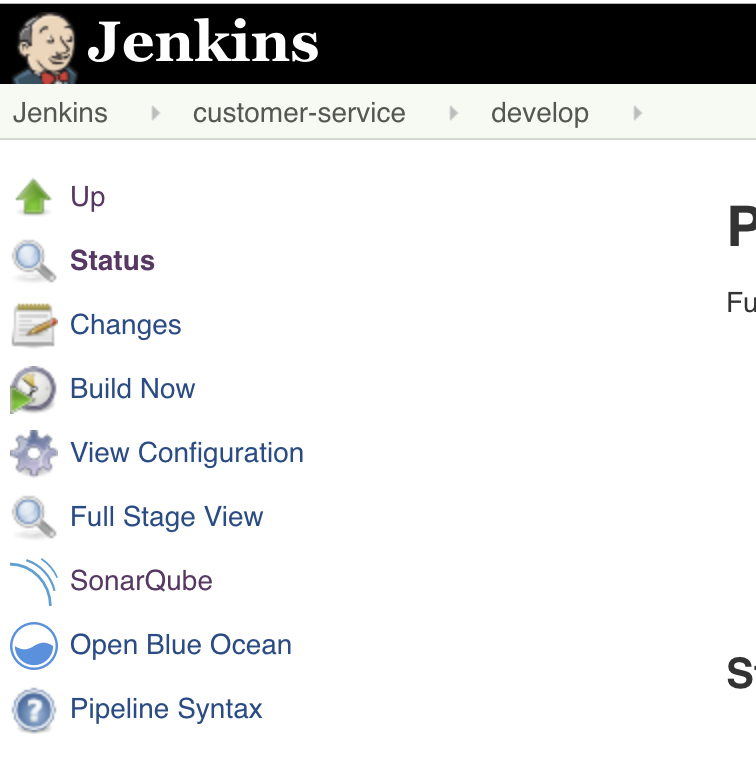

SonarQube analyzes the source code for common issue and test coverage. In this lab, you will add stages to perform analysis of you code.
Edit the Jenkinsfile for the customer-service project and add the following two stages to the build pipeline after the Unit Test stage.
...
stage ('Unit Test') {
sh "mvn -s configuration/settings.xml -Dnexus.url=${nexusUrl} -Dbuild.number=${release_number} test"
junit "target/surefire-reports/*.xml"
tep([$class: 'XUnitBuilder',
thresholds: [
[$class: 'FailedThreshold', unstableThreshold: '1']
],
tools: [
[$class: "JUnitType", pattern: "target/surefire-reports/*.xml"]
]])
}
stage('SonarQube Analysis') {
withSonarQubeEnv('sonar') { sh "mvn -s configuration/settings.xml -Dnexus.url=${nexusUrl} -Dbuild.number=${release_number} sonar:sonar" }
}
stage("Quality Gate"){
timeout(time: 1, unit: 'HOURS') {
def qg = waitForQualityGate()
if (qg.status != 'OK') {
error "Pipeline aborted due to quality gate failure: ${qg.status}"
}
}
}
...
Rebuild Project.
Once complete, notice the SonarQube link on the left navigation. You can click this to see the results of the analysis.
